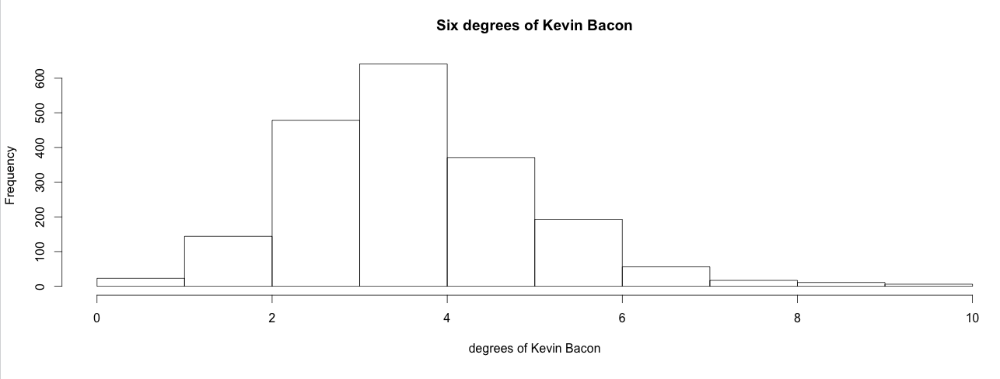
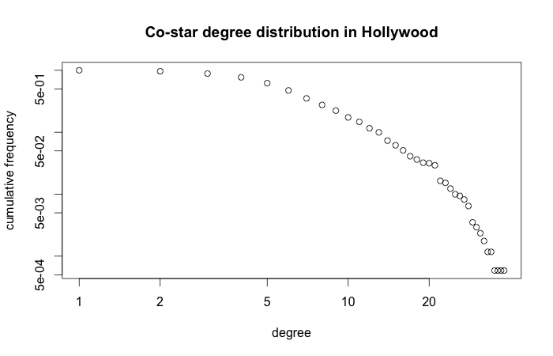

This tutorial shows how to do a visual analysis with the Gephi graph visualization tool, and basic social network analysis with R of the data in the DBpedia repository about Hollywood movies. It makes use of the SPARQL Package for R and the igraph library. For other tutorials of how to use the SPARQL Package, check out the Linked Open Piracy tutorial or the deforestation tutorial.
The SPARQL Package allows you to directly import results of SPARQL SELECT queries into the statistical environment of R as a data frame. That means you can directly perform statistical analysis on data sets on the web. For example, you can use the following R code to get data from the DBpedia Live SPARQL end point described below.
The complete R script and Gephi instructions can be downloaded here: dbpedia_movie_tutorial.zip.
Accessing the data
At first, make sure that you have recent versions of the two R packages SPARQL, igraph, network, and ergm installed.
You can accomplish this by running the following command:
install.packages(c('SPARQL','igraph','network','ergm'),dependencies=TRUE)
Now load the packages by calling:
library(SPARQL) library(igraph) library(network) library(ergm)
Define the endpoint that will provide you with the triples by
endpoint <- "http://live.dbpedia.org/sparql"
State that there are no further options to send to the SPARQL server. These options are sent as HTTP parameters and differ per end point. For example, Jena Fuseki can take the option “output=xml” to dictate that it should return XML, SWI-Prolog Cliopatria can take “entailment=rdfs” or “entailment=none” to state which kind of reasoning to apply.
options <- NULL
For a local Jena Fuseki installation hosting the same data in the LOP graph you can use the following options (uncommented, i.e., without the leading #):
# endpoint <- "http://localhost:3030/movie/sparql" # options <- "output=xml"
To shorten the URIs of the data that we get back, use some namespace declarations like this
prefix <- c("db","http://dbpedia.org/resource/")
sparql_prefix <- "PREFIX dbp: <http://dbpedia.org/property/>
PREFIX dc: <http://purl.org/dc/terms/>
PREFIX rdfs: <http://www.w3.org/2000/01/rdf-schema#>
PREFIX xsd: <http://www.w3.org/2001/XMLSchema#>
"
Let’s write a query that gets all actors, the movies they star in, and the director and release date of those movies. Also, we only want American movies, names in english, and dates that are correct XML Schema dates (ISO dates). If you use the SPARQL function to fire the query, you will get back an R data frame that contains the results. Every variable in the SPARQL query will correspond to a column in a result table data frame.
q <- paste(sparql_prefix,
'SELECT ?actor ?movie ?director ?movie_date
WHERE {
?m dc:subject <http://dbpedia.org/resource/Category:American_films> .
?m rdfs:label ?movie .
FILTER(LANG(?movie) = "en")
?m dbp:released ?movie_date .
FILTER(DATATYPE(?movie_date) = xsd:date)
?m dbp:starring ?a .
?a rdfs:label ?actor .
FILTER(LANG(?actor) = "en")
?m dbp:director ?d .
?d rdfs:label ?director .
FILTER(LANG(?director) = "en")
}')
res <- SPARQL(endpoint,q,ns=prefix,extra=options)$results
res
# output: # actor movie director movie_date # 1 "Harland Williams"@en "Big Money Hustlas"@en "John Cafiero"@en 993506400 # 2 "Jamie Spaniolo"@en "Big Money Hustlas"@en "John Cafiero"@en 993506400 # 3 "Paul Methric"@en "Big Money Hustlas"@en "John Cafiero"@en 993506400 # 4 "Joseph Utsler"@en "Big Money Hustlas"@en "John Cafiero"@en 993506400 # 5 "Rudy Ray Moore"@en "Big Money Hustlas"@en "John Cafiero"@en 993506400 # ...
The movie_date column contains some strange numbers. These are strange internal POSIX time representations. We can convert them to readable and usable times like this:
res$movie_date <- as.Date(as.POSIXct(res$movie_date,origin="1970-01-01"))
# output: # actor movie director movie_date # 1 "Harland Williams"@en "Big Money Hustlas"@en "John Cafiero"@en 2001-06-25 # 2 "Jamie Spaniolo"@en "Big Money Hustlas"@en "John Cafiero"@en 2001-06-25 # 3 "Paul Methric"@en "Big Money Hustlas"@en "John Cafiero"@en 2001-06-25 # 4 "Joseph Utsler"@en "Big Money Hustlas"@en "John Cafiero"@en 2001-06-25 # 5 "Rudy Ray Moore"@en "Big Money Hustlas"@en "John Cafiero"@en 2001-06-25 # ...
That looks better!
Representing Actor-movie relations
Now that we have some data we can try and visualize it. Let’s try and visualize which actors star in which movies.
We will start by tallying which actors appear in which movies. This can be accomplished with the table function applied to the actor and movie columns of the result table. We want a matrix from actors to movies, containing a one when an actor stars in a movie, and a zero when he or she does not. This can be accomplished with the ifelse function, which is very similar to the IF function in Excel, and the conversion function as.matrix, which coverts the tally table to matrix.
actor_movie_matrix <- as.matrix(ifelse(table(res$actor,res$movie) > 0, 1, 0))
actor_movie_matrix[5:8,6:8] # just a little sample of the matrix # output: # "21 (2008 film)"@en "28 Days (film)"@en "5 Fingers"@en ... # "Aaron Yoo"@en 1 0 0 ... # "Abigail Breslin"@en 0 0 0 ... # "Abraham Sofaer"@en 0 0 0 ... # "Adam Goldberg"@en 0 0 0 ... # ...
So apparently Aaron Yoo appears in the movie “21″ and Abigail Breslin does not.
We can convert the actor-movie matrix to an igraph incidence matrix with the following command:
a_m <- graph.incidence(actor_movie_matrix) a_m
# output: # # IGRAPH UN-B 3256 3571 -- # + attr: type (v/x), name (v/c)
This shows that we now have an undirected graph (UN), which is bipartite (B) or 2-mode, containing in total 3256 nodes and 3571 edges. The two modes of this bipartite graph are the set of actor nodes and the set of movie nodes. Nodes are called vertices in igraph. We can also see that there are currently two attributes in the graph, type and name. These are vertex attributes (v) and not edge attributes (e).
Now let’s add the directors as a vertex attribute. First we’ll have to associate the movies to their directors. To accomplish this we follow the same procedure we used to associate actors to movies. We want things to be nice and simple again, so we remove all duplicate directors. This can be done by asking for the edge list of the graph and then removing movie-director pairs of movies that were already listed before.
movie_director_matrix <- as.matrix(ifelse(table(res$movie,res$director) > 0, 1, 0)) el <- get.edgelist(graph.incidence(movie_director_matrix)) movie_directors <- el[!duplicated(el[,1]),]
movie_directors[1:10] # output: # # [1] "\"(Untitled) (film)\"@en" # [2] "\"10th & Wolf\"@en" # [3] "\"2 Days in the Valley\"@en" # [4] "\"200 Motels\"@en" # [5] "\"2010 (film)\"@en" # ...
If we ask for a list of all vertices of a_m by calling the vertex selector V like this: V(a_m), then we will first get all actor vertices, and then all the movie vertices.
You can assign vertex attributes by selecting the appropriate vertices with the vertex selector and then assigning a vector of values to the appropriate attribute name. The values will zip in place. Here is an example of how we give all nodes a unique number.
V(a_m)$number <- seq(1,length(V(a_m)))
a_m
# output: # # IGRAPH UN-B 3256 3571 -- # + attr: type (v/x), name (v/c), number (v/n)
We have a new vertex attribute.
V(a_m)$number
# output: # [1] 1 # [2] 2 # [3] 3 # ...
Nodes are now numbered. Let’s remove the attribute again.
a_m <- remove.vertex.attribute(a_m,'number')
Now we want to assign the directors to the appropriate movies. We can do that by zipping it into the graph at the right spot. The movies will appear after the actors (because they are the second mode of the 2-mode graph), so if we know how many actors we have then we know at which vertex number the movies will be. Let’s count the number of actors and movies by inspecting the size of the incidence matrices. You can calculate the same thing by using the function unique on the result table columns. Let’s use that method to calculate how many directors there are.
n_actors <- dim(actor_movie_matrix)[1] n_movies <- dim(actor_movie_matrix)[2] n_directors <- length(unique(res$director))
Now we will give all actors a “kind” attribute with value “actor”, all movies a “kind” attribute with value “movie”, and a “director” attribute with the appropriate director.
The command cbind makes a two-column matrix with the movies in the first column and the directors in the second column.
md <- cbind(res$movie,res$director) movie_directors <- md[!duplicated(md[,1]),] V(a_m)[1:n_actors]$kind <- "actor" V(a_m)[n_actors+1:n_movies]$kind <- "movie" V(a_m)[n_actors+1:n_movies]$director <- movie_directors[,2]
We do the same for movie dates. When we visualize the graph, we would like to be able to view the date of the movie as a label of the movie. Gephi wants all label attributes to be strings, so we apply the as.character conversion function to all movie dates. We store the numeric date (for sorting or correlation later) too.
md <- cbind(res$movie,res$date) movie_dates <- md[!duplicated(md[,1]),] V(a_m)[n_actors+1:n_movies]$date_label <- sapply(movie_dates,as.character) V(a_m)[n_actors+1:n_movies]$date_epoch <- movie_dates
Gephi has problems rendering non-ASCII characters like “é”, so let’s throw them out to make the visualization work without too much fuss.
V(a_m)$name <- iconv(V(a_m)$name,to='ASCII',sub="") V(a_m)$director <- iconv(V(a_m)$director,to='ASCII',sub="")
Gephi recognizes some attributes automatically, like the vertex attribute “Label” and the edge attribute “Weight”. Let’s use the “name” attribute as label, by making a copy.
V(a_m)$Label <- V(a_m)$name
Now it’s time to store the graph so that we can open it in Gephi. We will store it in GraphML, an XML schema for graphs.
write.graph(a_m,'starring_dbpedia_american.graphml',format="graphml")
Visualizing Actor-movie relations
Now it’s time to open Gephi. I will not go into much detail on this, because Gephi has an easy Graphical User Interface, and putting screenshots in this tutorial would make it very long. Try to follow these instructions to make a nice graph:
Gephi instructions
- File > Open “starring_dbpedia_american.graphml”
- Statistics > PageRank Run
- Partition Reload
- Partition select kind
- Partition Apply
- Ranking > Nodes select PageRank
- Ranking > Nodes set Min size 10, Max size 100
- Ranking Apply
- Layout > Yifan Hu Run. You need to scroll down in the section box. Run x4+, maybe increase initial step size to 100
- Layout >ForceAtlas 2 select Prevent Overlap
- Layout >ForceAtlas 2 Run (stop with the same button once it stabalizes)
- At the bottom of the Graph screen:
- Turn on Node Labels with the black “T”
- Set Node Label scaling to “Node size” with the black “A”
- Slide Node Label slider to lower label size
- Click the clipboard next to the Node Label slider, pick only “date”
You will now have a nice graph of actors and movies, colored by the kind of node (actor/movie). You can see that the biggest influence on the clusters is the release date of the movies, and that DBpedia contains a lot of information about modern movies and some classics, but not much in the 1960s and 1970s.
Representing actor-director relations
In this part of the tutorial we follow the same procedure again, but we will do some Linear Algebra to change the data for our needs.
Let’s try to show the place of the movie directors in the graph. For this we first make a movie-director incidence matrix. We already have an actor-matrix graph, which allows us to traverse from actors to movies. So if we have a movie-director graph we will be able to go from actors to movies to directors.
movie_director_matrix <- as.matrix(ifelse(table(res$movie,res$director) > 0, 1, 0))
Now let’s use matrix multiplication to calculate the actor-director matrix. Then we create the graph and assign some attributes as we did before.
actor_director_matrix <- actor_movie_matrix %*% movie_director_matrix a_d <- graph.incidence(actor_director_matrix,directed=FALSE,weighted=TRUE) V(a_d)[1:n_actors]$kind <- "actor" V(a_d)[n_actors+1:n_directors]$kind <- "director" V(a_d)$name <- iconv(V(a_d)$name,to='ASCII',sub="") V(a_d)$Label <- V(a_d)$name
By using the weighted=TRUE parameter we tell R to use the values in the matrix as edge weights. Let’s tell Gephi to use these weights, but let’s scale them from 0 to 1. We’ll use the edge selector E to get the edges.
E(a_d)
# output: # Edge sequence: # # [1] "Jim Sheridan"@en -- "50 Cent"@en # [2] "Don Coscarelli"@en -- "A. Michael Baldwin"@en # [3] "E. Elias Merhige"@en -- "Aaron Eckhart"@en # [4] "Scott Hicks"@en -- "Aaron Eckhart"@en # [5] "Kenny Ortega"@en -- "Aaron Lohr"@en # ...
E(a_d)$Weight <- E(a_d)$weight / max(E(a_d)$weight)
Now we store the graph for use in Gephi.
write.graph(a_d,'actor_director_dbpedia_american.graphml',format="graphml")
That went a lot quicker than the first time, didn’t it?
Visualizing actor-director relations
Now let’s visualize the graph. We basically follow the same procedure as before. At the end we will try a different coloring, to make the communities stand out.
Gephi instructions
- File > Open “actor_director_dbpedia_american.graphml”
- Follow the same procedure as last time to produce the layout.
- Statistics > Modularity Run
- Partition select Modularity Class
- Partition Apply
You can see that some directors reuse the same cast over and over again, like Francis Ford Coppola and Woody Allen. Some actors work with many directors, while others only work with a few.
Representing actor-actor costar relations
This has been interesting so far, but it has all been about visualization. Let’s try out some basic social network statistics. For this we take the classical 6 degrees of Kevin Bacon perspective on Hollywood. So the first step is to construct a adjacency graph of the costarring relation. We can accomplish this by taking the actor-movie matrix we constructed before, transposing it to a movie-actor matrix and then multiplying it with itself. This way we can traverse from actors to movies and then from movies to actors again, producing actor-actor relations.
costar_matrix <- actor_movie_matrix %*% t(actor_movie_matrix)
We are not interested in reflexive links, because it is obvious that everybody costars with themselves. So let’s remove the numbers on the diagonal of the actor-actor matrix.
diag(costar_matrix) <- 0
We now have to use a different graph construction function, because we’re dealing with an adjacency (or transition) matrix, which is a 1-mode graph, as opposed to an incidence matrix, which is a 2-mode (bipartite) graph.
a_a <- graph.adjacency(costar_matrix,weighted=TRUE,mode="undirected")
Now let’s compute some SNA properties, like betweenness, edge betweenness and eigenvector centrality (Google PageRank is a kind of eigenvector centrality), and assign them to the nodes with aptly named attributes.
V(a_a)$betweenness <- betweenness(a_a, directed=FALSE, normalized=TRUE) E(a_a)$betweenness <- edge.betweenness(a_a, directed=FALSE) V(a_a)$centrality <- evcent(a_a, weights=V(a_a)$weight)$vector
We can use these attributes for coloring and sizing in Gephi later. Let’s first look at Kevin Bacon. Where is Kevin Bacon?
To say it like a computer: His node is the node of which the node name is equal to Kevin Bacon.
kevin_bacon <- V(a_a)[V(a_a)$name == '"Kevin Bacon"@en']
Now let’s calculate the length of the shortest path from each node to Kevin Bacon, and store that length in an attribute.
kevin_bacon_degree <- shortest.paths(a_a,v=kevin_bacon,to=V(a_a)) V(a_a)$kevin_bacon_degree <- kevin_bacon_degree
We can now check if the statement that everybody that stars in a movie is 6 degrees of costarring or less away from Kevin Bacon.
To do this we make a histogram of the degrees and add up the percentages per bucket for the buckets representing degree 1 to 6.
kevin_bacon_hist <- hist(V(a_a)$kevin_bacon_degree,xlab="degrees of Kevin Bacon",main="Six degrees of Kevin Bacon")

sum(kevin_bacon_hist$intensities[1:6])
# output: # [1] 0.9536082
Close enough. 95% of the actors in this dataset are within 6 degrees of Kevin Bacon. However, our dataset is incomplete. Movies without a nice date were excluded, so were movies without directors, and movies or stars without a label that was explicitly marked as english. So the actual percentage is different.
DBpedia Live is a very fickle data set. Every day these results may vary. One movie page that gets removed from Wikipedia can completely change the Kevin Bacon degree distribution.
Let’s see if the social network is a scale-free network. This is the case only if the degree distribution follows a power law with alpha between 2 and 3. Let’s calculate the distribution and fit a power law function to it.
dd <- degree.distribution(a_a, cumulative=TRUE) plot(dd,log="xy",xlab="degree",ylab="cumulative frequency",main="Co-star degree distribution in Hollywood")

d <- degree(a_a) power.law.fit(d, xmin=1) # alpha include all the actors power.law.fit(d, xmin=10) # alpha not including the top 10 most popular actors
# output: # Coefficients: # alpha # 1.423684 # Warning message: # In power.law.fit(d, xmin = 1) : too small values eliminated from vector # # Coefficients: # alpha # 3.363203 # Warning message: # In power.law.fit(d, xmin = 10) : too small values eliminated from vector
The distribution is not that of a scale-free network. If we include all the actors then the alpha is too low. If we throw out the least popular people then the alpha is suddenly too high. The difference between the popular and non-popular actors is too large for it to be a scale-free network.
Now, let’s store it and stare at the graph in Gephi.
Visualizing Kevin Bacon
Before, we did coloring of communities in Gephi by calling using the Modularity statistics tool. Let’s calculate modularity in R this time.
There are many community detectors in the igraph package (walktrap, spinglass, etc.) We use Leading Eigenvector communities. We store the number of the community each vertex belong to in the vertex attribute “lec_community”. Then we can use this attribute in Gephi to color the nodes.
V(a_a)$lec_community <- as.character(leading.eigenvector.community(a_a)$membership)
Now let’s store the graph in GraphML.
E(a_a)$Weight <- E(a_a)$weight V(a_a)$name <- iconv(V(a_a)$name,to='ASCII',sub="") V(a_a)$Label <- V(a_a)$name write.graph(a_a,'costarring_dbpedia_american.graphml',format="graphml")
To visualize the network we follow almost the same procedure as before, but we color the graph by LEC community by picking the attribute “lec_community” in the Partition pane. Also, we are going to experiment a bit with filters. In Gephi you can make sequences of node and edge filters by hooking them together in a drag-and-drop pane called “Filters”. Let’s throw out everybody who’s not in the Giant Component of the graph. For our undirected graph that is the largest connected component. This will throw out everybody with an undefined Kevin Bacon degree, because Kevin Bacon is in the Giant Component. If you want to apply more filters you can drag them into the subfilter slot of the Giant Component filter.
Gephi instructions
- File > Open “costarring_dbpedia_american.graphml”
- Drag Filters > Library > Topology > Giant Component into the Queries
- Push Filter
- Partition Reload
- Partition select lec_community
- Partition Apply
- Continue as before.
Gephi instructions
- Ranking > Nodes select kevin_bacon_degree
- Slide the white color triangle to about 1/3 from the left.
This increases the amount of white in the gradient. - Ranking Apply
- Find Kevin Bacon!
Wrap-up
In this tutorial we showed how to do simple visualizations of social network data in the part of DBpedia about Hollywood movies using the SPARQL Package for R and Gephi. We also showed how to compute some simple graph statistics.
In the future this tutorial will be extended to show how you can convert graphs to network models that you can use in Exponential Random Graph Model analyses.
Edit

{kind=link}
{kind=link}
{kind=link}
{kind=link}